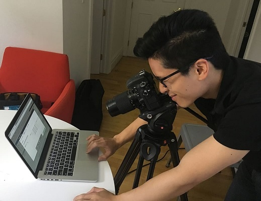

Need to include the mouse cursor/pointer in a screenshot?
Not like this:

Like this:
Use greenshot "a free screenshot tool optimized for productivity"
Source
Links
- Download http://getgreenshot.org/downloads/
- Source code https://bitbucket.org/greenshot/greenshot/